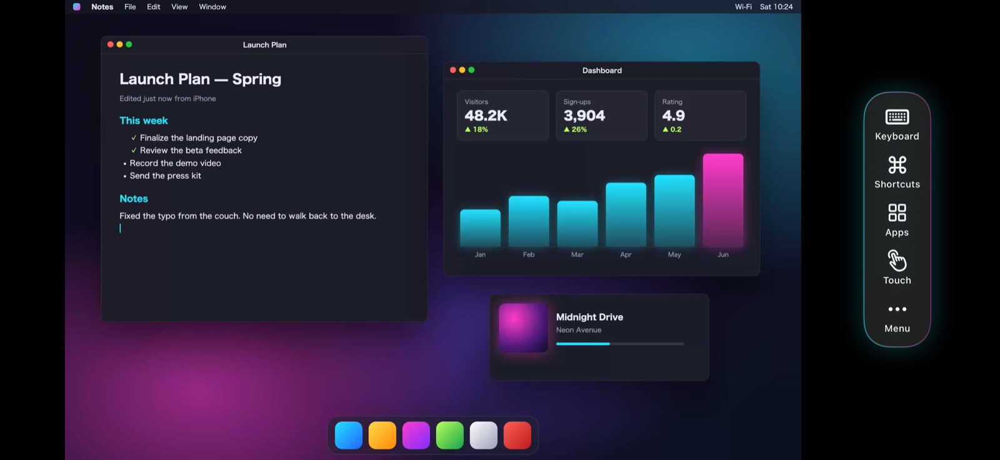
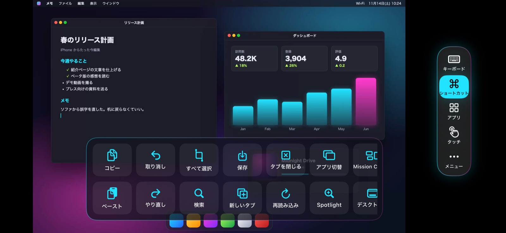
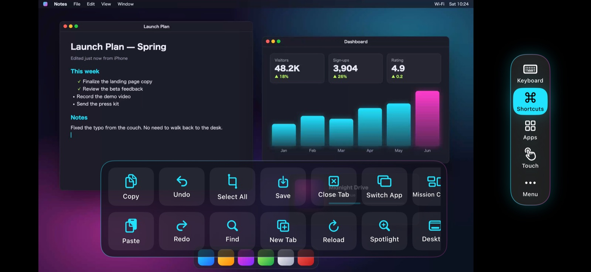
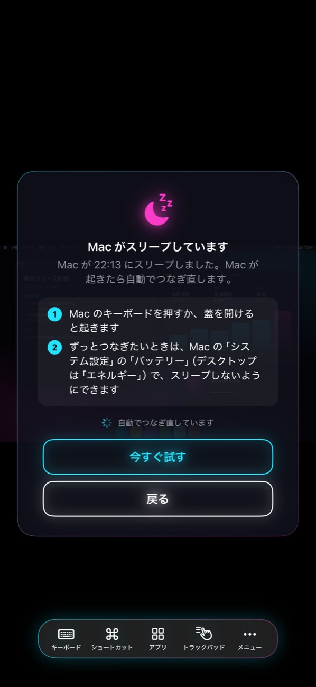
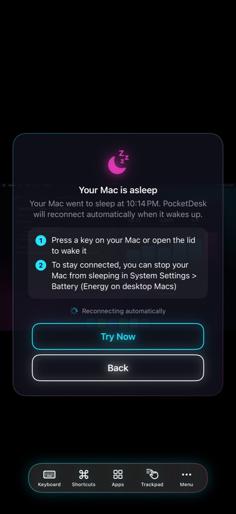

ソファから、外出先から。
いつもの Mac を、指先で。
From the couch, from anywhere.
Your Mac at your fingertips.
PocketDesk は、iPhone に Mac の画面を映して、触ってそのまま操作できるアプリです。準備は、Mac にアプリを入れて QR コードを読み取るだけ。
PocketDesk puts your Mac's screen on your iPhone and lets you control it with a touch. Setup is just installing an app on your Mac and scanning a QR code.

こんなときに、便利です。
Handy for everyday moments.
ソファやベッドから
From the couch or bed
仕事部屋の Mac で動かしている書き出しやダウンロードを、iPhone でちらっと確認。
Check on an export or download running on the Mac in your office.
離れた Mac を手元で
A Mac across the room
Mac で流している音楽を止める・変える。ちょっとした操作のために立ち上がらなくていい。
Pause or change the music on your Mac without getting up.
テレビにつないだ Mac
A Mac on the TV
大きな画面につないだ Mac を、iPhone をトラックパッド代わりにして操作。
Use your iPhone as a trackpad for a Mac hooked up to a big screen.
外出先から
While you're out
家の Mac にある資料を、出先でさっと開いて確認（無料の Tailscale を使います）。
Open a file on your Mac at home while you're out (with the free Tailscale app).
はじめかた
Setting up
準備は最初の一度だけ。次からは、アプリを開いて 1 タップでつながります。
You only do this once. After that, open the app and connect with one tap.
iPhone に PocketDesk を入れる
Get PocketDesk on your iPhone
App Store から無料でダウンロードできます。アカウントの登録はいりません。
It's a free download from the App Store. No account to create.
このページを Mac で見ているなら、iPhone のカメラでこの QR コードを写すと App Store が開きます。
Reading this on your Mac? Point your iPhone's camera at this code to open the App Store.
操作したい Mac に「PocketDesk Host」を入れる
Install “PocketDesk Host” on the Mac you want to control
- 下のボタンで、Mac にダウンロードします
- zip を開いて、出てきた PocketDesk Host を「アプリケーション」フォルダに入れます
- 開くと、画面の右上（メニューバー）に PocketDesk のアイコンが出ます
- Download it on your Mac with the button below
- Open the zip and move PocketDesk Host to your Applications folder
- Open it. A PocketDesk icon appears at the top right of your screen (the menu bar)
shosuke24.github.io/pocketdesk を開いてダウンロードしてください。AirDrop でこのページを Mac に送るのがかんたんです。shosuke24.github.io/pocketdesk in a browser on your Mac to download it. The easiest way is to AirDrop this page to your Mac.安心Apple の公証を受けたアプリです（Developer ID で署名済み）。
SafeSigned with a Developer ID and notarized by Apple.
Mac で 2 つの許可をオンにする
Turn on two permissions on the Mac
画面を iPhone に送るための「画面収録」と、クリックや文字を Mac に届けるための「アクセシビリティ」です。
“Screen Recording” sends your screen to the iPhone, and “Accessibility” lets clicks and typing reach your Mac.
- メニューバーの PocketDesk アイコンを押し、「開く」を押します
- 出てきた「システム設定」で、PocketDesk Host をオンにします
- 「終了して再度開く」と聞かれたら、それを押します
- Click the PocketDesk icon in the menu bar, then click “Open”
- In System Settings, turn on PocketDesk Host
- If asked, click “Quit & Reopen”
ヒントオンにすると、すぐに反映されます。Mac のパスワードか Touch ID を聞かれることがあります。
TipChanges apply right away. Your Mac may ask for your password or Touch ID.
画面収録とシステムオーディオ録音
Screen & System Audio Recording
アクセシビリティ
Accessibility
iPhone で QR コードを読み取る
Scan the QR code with your iPhone
- Mac のメニューバーの PocketDesk →「新しい端末を追加…」
- 出てきた QR コードに iPhone のカメラをかざし、「PocketDesk」で開く（アプリの「QR コードで追加」でも読み取れます）
- iPhone に「ローカルネットワーク」の確認が出たら「許可」を押します（家の中の Mac を見つけるため）
- On your Mac, choose PocketDesk → “Add New Device…” in the menu bar
- Point your iPhone's camera at the QR code and open it in PocketDesk (or use “Add with QR Code” in the app)
- If your iPhone asks about “Local Network”, tap “Allow” (so it can find your Mac at home)
安心QR コードは 1 回だけ使えて、10 分で無効になります。Mac の前にいる人しかペアリングできません。
SecureThe QR code works once and expires in 10 minutes, so only someone at your Mac can pair.
「接続する」をタップ。これで完成！
Tap “Connect”. You're all set!
Mac の画面が iPhone に映ります。次からは、アプリを開いて 1 タップでつながります。
Your Mac's screen appears on your iPhone. Next time, just open the app and tap once.
おすすめメニューバーの PocketDesk で「ログイン時に起動」をオンにしておくと、Mac を再起動してもすぐ使えます。
TipTurn on “Open at Login” from the PocketDesk menu bar icon so it's ready even after your Mac restarts.
スマホと同じ感覚で、操作できます。
Feels just like using your phone.
触った場所をクリック。なぞればスクロール。iPad を使うような感覚で Mac を動かせます。最初に開いたときも、アプリが操作のしかたを案内します。
Touch to click, slide to scroll. Use your Mac the way you'd use an iPad. The app walks you through the gestures the first time, too.
触る／2 回触る
Touch / double-touch
その場所をクリック／ダブルクリック
Click / double-click right there
1 本指でなぞる
Slide one finger
スクロール（指を離しても慣性ですべる）
Scroll, with smooth momentum
長押し
Long press
右クリック（2 本指タップでも）
Right-click (or two-finger tap)
長押ししたまま動かす
Long press, then move
ドラッグ（文字の選択・ウインドウの移動）
Drag (select text, move windows)
文字の入力欄を触る
Touch a text field
キーボードが自動で出る。日本語の変換も iPhone で
The keyboard pops up automatically
ピンチ
Pinch
拡大・縮小。小さな文字もくっきり
Zoom in and out to read small text
3 本指で上・下
Three fingers up / down
Mission Control・アプリのウインドウ（左右で操作スペースの切り替え）
Mission Control / App windows (left / right switches spaces)
トラックパッドモード
Trackpad mode
なぞってカーソルを動かし、タップでクリック。細かい作業に
Slide to move the pointer, tap to click. Great for precise work


画面の端のボタンで、もっと便利に。
More at the edge of the screen.
-
キーボードKeyboard文字の入力。⌘ や矢印などの特別なキーもType, including ⌘, arrow keys and other special keys
- ⌘
ショートカットShortcutsコピー・ペースト・取り消し・保存などをワンタップでCopy, paste, undo, save and more in one tap
-
アプリApps開いているアプリを選んで、前に出すPick an open app and bring it to the front
-
タッチ／トラックパッドTouch / Trackpad操作のしかたを切り替えSwitch how you control the Mac
- ⋯
メニューMenu画質・ディスプレイの切り替え・クリップボード・設定Quality, displays, clipboard and settings


つながらないときも、迷いません。
Never wonder why it won't connect.
「なぜつながらないのか」と「次にすること」を画面に出します。Mac が戻れば、自動でつなぎ直します。
PocketDesk tells you why and what to do next, and reconnects on its own when your Mac is back.
-
Mac がスリープしているYour Mac is asleep起きたら自動でつなぎ直しますReconnects when it wakes up
-
PocketDesk Host が止まっているPocketDesk Host isn't runningMac で開けば、すぐにつながりますOpen it on your Mac and you're back
-
別の Wi-Fi にいるYou're on a different Wi-Fi同じ Wi-Fi か Tailscale でつながりますUse the same Wi-Fi, or Tailscale
-
Mac の許可がオフになっているA permission is off on the Macどこをオンにすればいいか案内しますShows exactly what to turn on
外出先からも、いつもの Mac に。
Reach your Mac from anywhere.
家では、準備なしでつながります。外から使うときだけ、無料のアプリ「Tailscale（テイルスケール）」を Mac と iPhone の両方に入れます。準備は最初の 1 回だけ。あとは iPhone でスイッチを入れるだけです。
At home, it just works. To use it while you're out, add the free Tailscale app to both your Mac and your iPhone. Set it up once — after that, just flip a switch on your iPhone.
家で使う
At home
Mac と同じ Wi-FiSame Wi-Fi as your Macアプリを開けば、そのままつながります。Tailscale はいりません。
Open the app and you're connected. No Tailscale needed.
外出先で使う
Away from home
モバイル回線・カフェや職場の Wi-Fi などCellular, café or office Wi-Fi, and more下の準備を一度すれば、どこからでも家の Mac につながります。
Do the one-time setup below and reach your Mac from anywhere.
Tailscale とは？ あなたの iPhone と Mac だけをつなぐ、暗号化された専用の道を作るアプリです。ルーターの設定や、むずかしい知識はいりません。個人で使うなら無料です。
What's Tailscale? An app that makes a private, encrypted path between just your iPhone and your Mac. No router settings or networking know-how needed. Free for personal use.
準備（最初の 1 回だけ）One-time setup
Mac に Tailscale を入れて、ログインする
Install Tailscale on your Mac and sign in
- Mac で Tailscale のダウンロードページを開き、Mac 版を入れます（Mac App Store 版でもかまいません）
- Tailscale を開き、画面の案内にそってログイン。Google・Apple・Microsoft などのアカウントで入れます
- VPN の追加などの確認が出たら「許可」
- On your Mac, open the Tailscale download page and install the Mac version (the Mac App Store version works too)
- Open Tailscale and follow the steps to sign in. You can use a Google, Apple or Microsoft account, among others
- If you're asked to allow a VPN configuration, click Allow
OK の目印メニューバーに Tailscale のアイコンが出ていれば準備完了です。
You're setwhen the Tailscale icon shows up in the menu bar.
iPhone にも入れて、同じアカウントでログインする
Install it on your iPhone and sign in with the same account
- App Store で Tailscale を入れて開きます
- Mac と同じアカウントでログインします（別のアカウントだとつながりません）
- 「VPN 構成の追加」を求められたら「許可」して、iPhone のパスコードを入れます
- Get Tailscale from the App Store and open it
- Sign in with the same account you used on your Mac (a different account won't connect)
- When asked to add a VPN configuration, tap Allow and enter your iPhone passcode
家の Wi-Fi で、一度 PocketDesk をつなぐ
Connect once with PocketDesk on your home Wi-Fi
Mac の Tailscale がオンのまま、いつもどおり PocketDesk で Mac につなぎます。これで iPhone が Mac の Tailscale のアドレスを自動で覚えます。数字を入力する必要はありません。
With Tailscale on, connect to your Mac in PocketDesk as usual. Your iPhone remembers your Mac's Tailscale address automatically — nothing to type.
すでに使っている人もTailscale を入れたあとに、家で 1 回つなげば OK です。
Already using PocketDesk?Just connect once at home after installing Tailscale.
Mac が眠らない・ロックされないようにする
Keep your Mac awake and unlocked
外から操作できるのは、Mac が起きていて、ロックされていないときだけです。ロック画面のパスワードは、離れた場所からは入力できません。
You can only take control while your Mac is awake and unlocked. The lock screen password can't be entered remotely.
- MacBook をスリープさせない「システム設定」→「バッテリー」→「オプション…」で、「電源アダプタ使用時はディスプレイがオフのときに自動でスリープさせない」をオン。電源につなぎ、ふたは開けたままにします（閉じるとスリープします）
- iMac・Mac mini などをスリープさせない「システム設定」→「エネルギー」で、「自動でスリープさせない」の項目をオン
- ロックしない「システム設定」→「ロック画面」で、「スクリーンセーバの開始後またはディスプレイがオフになったあとにパスワードを要求」を「しない」に
- MacBook: don't sleepSystem Settings → Battery → Options…, then turn on “Prevent automatic sleeping on power adapter when the display is off.” Keep it plugged in with the lid open (closing the lid puts it to sleep).
- iMac, Mac mini, etc.: don't sleepSystem Settings → Energy, then turn on the option to prevent automatic sleeping.
- Don't lockSystem Settings → Lock Screen, then set “Require password after screen saver begins or display is turned off” to Never.
注意ロックしない設定のあいだは、家にいる人がパスワードなしで Mac を使えます。外から使う日だけこの設定にするなど、使い分けてください。
Heads-upWhile your Mac doesn't lock, anyone at home can use it without a password. Consider turning this on only on days you'll need it.
画面は消えていて OKPocketDesk でつなぐと、Mac の画面がつきます。
The display can be offIt turns on when you connect with PocketDesk.
出かける前に一度家でつないでみると安心です。macOS 15 以降は、ときどき Mac に画面収録の確認が出て、Mac の前で「許可」を押す必要があります。
Try it once before you leave.On macOS 15 and later, your Mac occasionally asks to confirm screen recording, and you have to click Allow at the Mac.
外出先では、これだけWhen you're out
家に帰ったら、Tailscale はオンのままでも、オフにしてもかまいません。
Back home, you can leave Tailscale on or turn it off.
外からつながらないときIf it won't connect from outside
PocketDesk が理由を表示します。よく出るものと、することです。
PocketDesk tells you why. Here are the common ones and what to do.
- 「この端末の Tailscale がオフです」iPhone の Tailscale をオンにしてください。オンになると、自動でつなぎ直します。
- 「Mac の Tailscale のアドレスがまだわかりません」Mac の Tailscale にログインしているか確かめて、家の Wi-Fi で一度つないでください（準備 3）。
- 「Mac から応答がありません」Mac がスリープしていないか、Mac の Tailscale がオンかを確かめてください（準備 4）。
- 「Mac はロックされています」離れた場所からはロックを解除できません。次からは「ロックしない」設定にしてから出かけてください（準備 4）。
- 「Mac で PocketDesk Host が動いていません」Mac が再起動したあとは、Mac の前でログインするまでつながりません。
- 「外からは、このままではつながりません」上の準備 1〜3 がまだのようです。
- “Tailscale is off on this device”Turn on Tailscale on your iPhone. PocketDesk reconnects as soon as it's on.
- “Your Mac's Tailscale address isn't known yet”Make sure Tailscale on your Mac is signed in, then connect once on your home Wi-Fi (step 3).
- “No response from your Mac”Check that your Mac isn't asleep and that Tailscale is on (step 4).
- “Your Mac is locked”It can't be unlocked remotely. Next time, turn off locking before you leave (step 4).
- “PocketDesk Host isn't running on your Mac”After your Mac restarts, it can't connect until someone logs in at the Mac.
- “Can't reach your Mac from here yet”Steps 1–3 above haven't been done yet.
Tailscale について知っておきたいこと
- 料金：個人の用途なら無料（Personal プラン）。仕事で使うときは、Tailscale の料金プランを確かめてください。
- 安全：Tailscale の道は暗号化されていて、その中で PocketDesk 自身の暗号化もかかったままです。回線によっては Tailscale の中継サーバーを通りますが、中身は Tailscale にも見えません。
- ルーターの設定は不要：ルーターのポートを開けて直接つなぐ方法は、安全のためおすすめしません。
Tailscale は Tailscale Inc. の登録商標です。PocketDesk は Tailscale Inc. と提携していない、独立したアプリです。
Good to know about Tailscale
- Cost: Free for personal use (Personal plan). For work use, check Tailscale's pricing.
- Security: Tailscale's path is encrypted, and PocketDesk's own encryption stays on inside it. On some networks traffic goes through Tailscale's relay servers, but Tailscale can't see the contents.
- No router setup: We don't recommend opening ports on your router to connect directly.
Tailscale is a registered trademark of Tailscale Inc. PocketDesk is an independent app and is not affiliated with Tailscale Inc.
安心して使える理由
Private by design
あなたの機器どうしだけ
Only between your devices
画面も操作も、iPhone と Mac のあいだでやりとり。PocketDesk のサーバーはなく、通信は端末ごとの鍵で暗号化されます。外出先から Tailscale を通すときも、中身は暗号化されたままです。
Your screen and input go between your iPhone and Mac, encrypted with per-device keys. There are no PocketDesk servers, and traffic stays encrypted even through Tailscale.
Mac の前で許可した端末だけ
Only devices you approve
知らない人の端末はつながれません。なくした端末は、Mac のメニューからいつでも取り消せます。
Strangers can't connect. Lost a phone? Remove it from the Mac's menu anytime.
操作中は Mac に表示
Always visible on the Mac
「◯◯ から操作中」が Mac の画面に出て、その場で切断できます。iPhone のアプリは Face ID でロックできます。
The Mac shows who's in control and can disconnect instantly. Lock the iPhone app with Face ID.
無料・登録なし・広告なし
Free, no sign-up, no ads
アカウントもメールアドレスもいりません。使い方のデータも集めません。
No account or email address required. No tracking or data collection.
よくある質問
Frequently asked questions
お金はかかりますか？
かかりません。iPhone の PocketDesk も Mac の PocketDesk Host も無料で、アプリ内課金や広告もありません。外出先から使うときの Tailscale も、個人の用途なら無料です（仕事で使うときは Tailscale の料金プランを確かめてください）。
Windows のパソコンも操作できますか？
いいえ。操作される側は Mac（macOS 14 以降）だけです。
Android や、別の Mac から操作できますか？
Android 版と、Mac から操作する版を準備中です。公開したら、このサイトでお知らせします。
Mac と iPhone が同じ Wi-Fi でないと使えませんか？
家の中では同じ Wi-Fi が必要です。外出先からは、Mac と iPhone の両方に無料の Tailscale を入れると使えます（外出先から）。
Mac がスリープするとどうなりますか？
スリープ中はつながりません。Mac が起きれば、自動でつなぎ直します。外から使う日は、Mac がスリープ・ロックしないようにしておいてください（設定のしかた）。
Tailscale を使うと、画面の中身を見られませんか？
見られません。Tailscale の道は暗号化されていて、その中で PocketDesk 自身の暗号化もかかったままです。中継サーバーを通るときも、中身は Tailscale にも見えません。
ほかの人に Mac を操作されませんか？
Mac の前で許可した端末しかつながれません。操作中は Mac の画面に表示が出るので、気づかないうちに操作されることはありません。端末をなくしたときは、Mac のメニューバーの PocketDesk からその端末の許可を取り消してください。
画面が真っ暗、またはクリックが届きません
Mac の「画面収録」か「アクセシビリティ」の許可がオフになっています。アプリに直し方が出るので、そのとおりにオンにしてください。くわしくはサポートへ。
Does it cost anything?
No. Both PocketDesk for iPhone and PocketDesk Host for Mac are free, with no in-app purchases or ads. Tailscale, for use away from home, is free for personal use (for work use, check Tailscale's pricing).
Can I control a Windows PC?
No. The computer you control must be a Mac running macOS 14 or later.
Can I control my Mac from Android or another Mac?
Versions for Android and for controlling from a Mac are on the way. We'll announce them on this site.
Do my Mac and iPhone need to be on the same Wi-Fi?
At home, yes. From anywhere else, install the free Tailscale on both (see Away from home).
What happens when my Mac goes to sleep?
You can't connect while it's asleep. When it wakes up, PocketDesk reconnects on its own. If you'll be using it while you're out, keep your Mac awake and unlocked (how).
Can Tailscale see my screen?
No. Tailscale's path is encrypted, and PocketDesk's own encryption stays on inside it. Even through Tailscale's relay servers, the contents stay hidden from Tailscale.
Could someone else control my Mac?
Only devices approved at your Mac can connect, and the Mac always shows when it's being controlled. If you lose a device, remove its access from the PocketDesk menu bar icon.
The screen is black, or clicks don't work
“Screen Recording” or “Accessibility” is off for PocketDesk Host. The app shows how to fix it. See Support for more.
Mac を、ポケットに。
Your Mac, in your pocket.
無料ではじめられます。アカウントの登録もいりません。
Free to get started. No account needed.
iPhone のカメラで写すと、App Store の PocketDesk が開きます。
Scan with your iPhone's camera to open PocketDesk on the App Store.